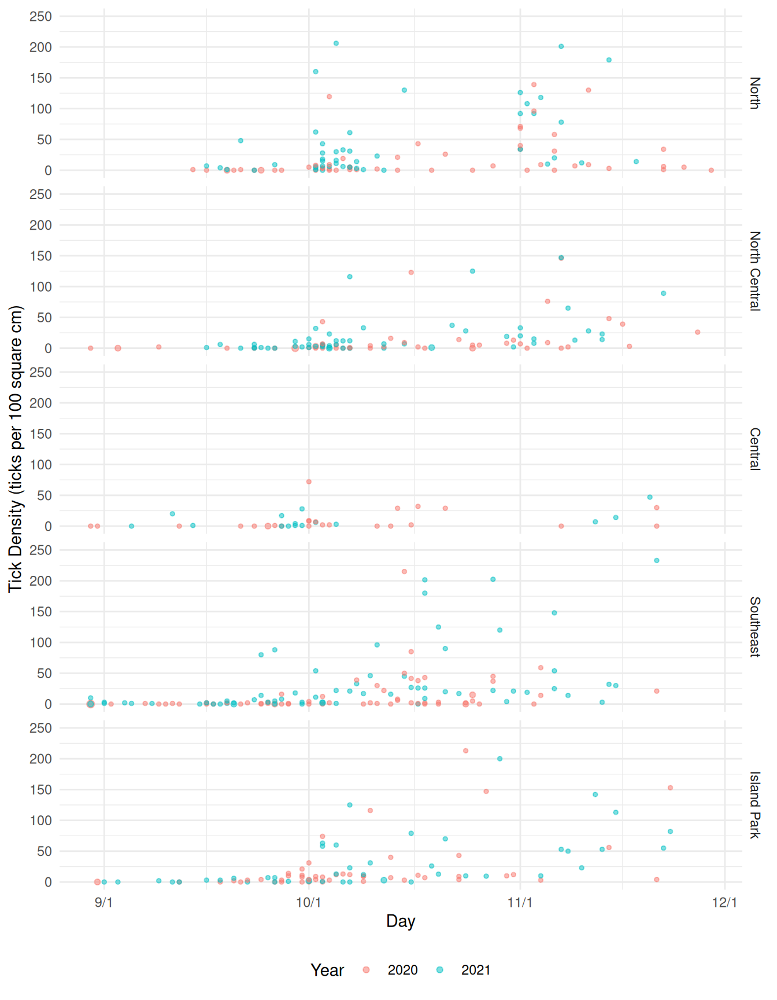
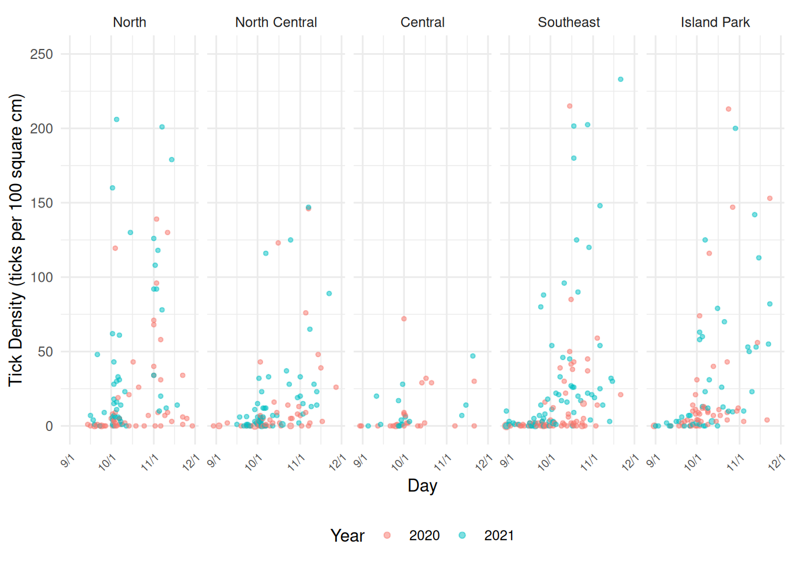
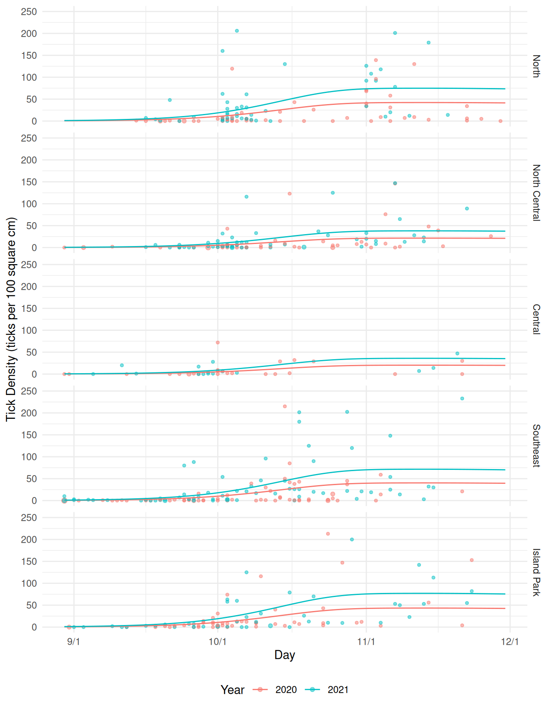
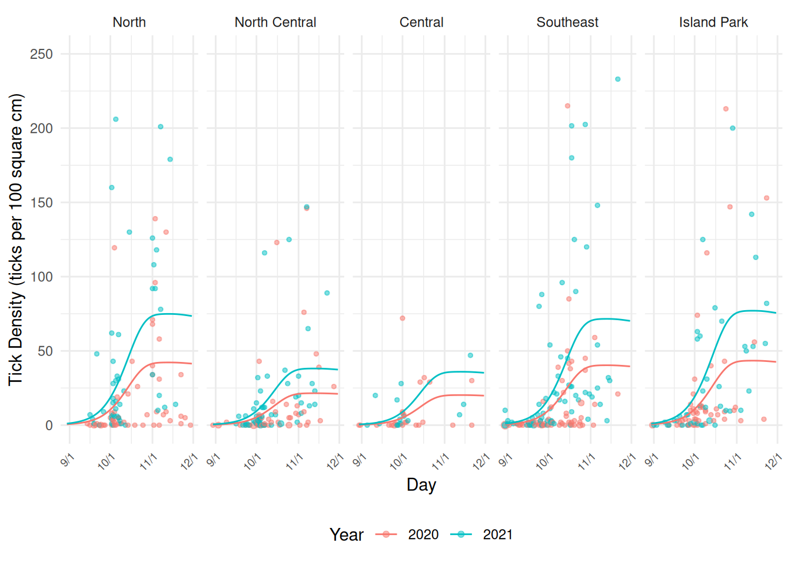
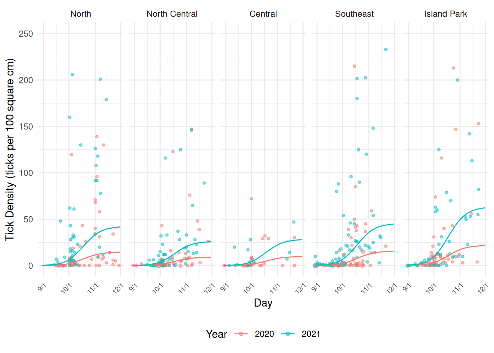
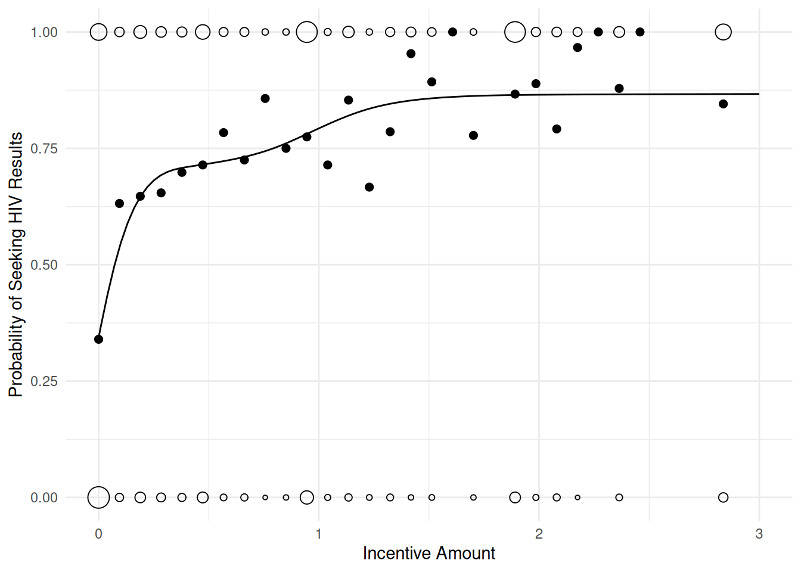
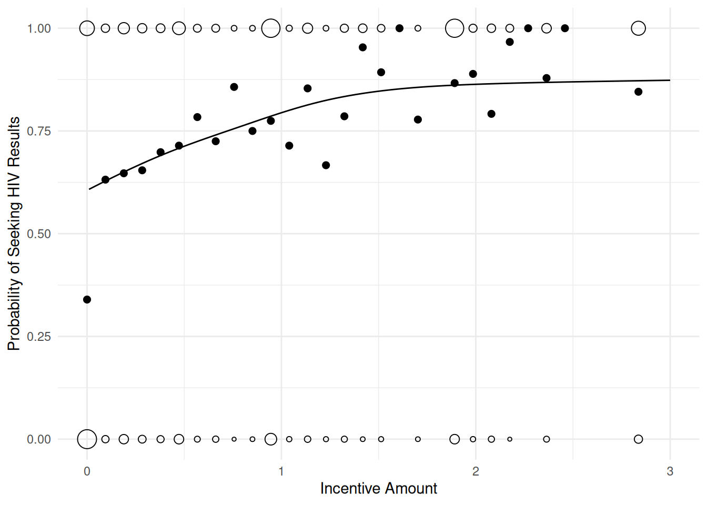

You can also download a PDF copy of this lecture.
This is part of an ongoing research project in collaboration with researchers in the College of Natural Resources.
The following packages are being used.
library(dplyr) # data manipulation
library(tidyr) # data manipulation
library(lubridate) # working with dates
library(forcats) # working with factors
library(whereami) # find current directory
library(ggplot2) # graphics
library(mgcv) # GAMs
library(trtools) # inference tools
library(emmeans) # inference tools
options(digits = 4) # control number of digits displayedHere I can use dirname(thisfile()) to find the directory
containing this Rmarkdown file, so I do not have to specify the full
path to the data file. Note that thisfile() is from the
whereami package. I have the data stored in a
sub-directory (“tickdata”) of the directory containing this Rmarkdown
file.
ticks <- read.csv(paste(dirname(thisfile()),
"/tickdata/tick_data_Robenstein.csv", sep = ""))
names(ticks) <- c("moose","mortality","ticks","size","date","gmu","sex","note")
head(ticks) moose mortality ticks size date gmu sex note
1 21005370 H 0 100 9/16/2020 1 MALE 1
2 21005396 H 21 100 10/14/2020 1 MALE 1
3 21005452 H 0 100 10/5/2020 1 MALE 1
4 21005506 H 9 100 11/11/2020 1 MALE 1
5 21005526 H 34 100 11/22/2020 1 MALE 1
6 21005538 H 1 100 11/5/2020 1 MALE 0Here I am going to process the data to get it ready for plotting and modeling.
ticks <- ticks |>
mutate(note = factor(note, levels = 0:3,
labels = c("exclude", "include", "deterioration", "nodate"))) |>
mutate(date = mdy(date)) |>
mutate(month = month(date, label = TRUE), year = year(date), day = yday(date)) |>
filter(!is.na(date), month %in% c("Aug","Sep","Oct","Nov")) |>
mutate(year = factor(year)) |> mutate(sex = tolower(sex)) |>
mutate(day = ifelse(year == "2020", day - 1, day))
head(ticks) moose mortality ticks size date gmu sex note month year day
1 21005370 H 0 100 2020-09-16 1 male include Sep 2020 259
2 21005396 H 21 100 2020-10-14 1 male include Oct 2020 287
3 21005452 H 0 100 2020-10-05 1 male include Oct 2020 278
4 21005506 H 9 100 2020-11-11 1 male include Nov 2020 315
5 21005526 H 34 100 2020-11-22 1 male include Nov 2020 326
6 21005538 H 1 100 2020-11-05 1 male exclude Nov 2020 309Here I am going to use rename to rename the imported
variables.
gmu <- read.csv(paste(dirname(thisfile()), "/tickdata/tick_study_areas.csv", sep = "")) |>
rename(gmu = GMU, area = study.Area, samples = hh_samples)
head(gmu, 10) gmu area samples
1 1 North 27
2 2 North 36
3 3 North 19
4 4 North 24
5 4A North 6
6 5 North Central 18
7 6 North Central 22
8 7 North Central 7
9 8 North Central 9
10 8A North Central 8ticks <- left_join(ticks, gmu) |>
mutate(area = factor(area)) |>
mutate(area = fct_relevel(area, c("North", "North Central",
"Central", "Southeast", "Island Park")))
head(ticks) moose mortality ticks size date gmu sex note month year day area samples
1 21005370 H 0 100 2020-09-16 1 male include Sep 2020 259 North 27
2 21005396 H 21 100 2020-10-14 1 male include Oct 2020 287 North 27
3 21005452 H 0 100 2020-10-05 1 male include Oct 2020 278 North 27
4 21005506 H 9 100 2020-11-11 1 male include Nov 2020 315 North 27
5 21005526 H 34 100 2020-11-22 1 male include Nov 2020 326 North 27
6 21005538 H 1 100 2020-11-05 1 male exclude Nov 2020 309 North 27Some variables we do not need. Also we are going to discard some questionable observations and focus only on the males.
ticks <- ticks |> select(-mortality, -samples) |>
filter(note == "include") |> filter(sex == "male")
head(ticks) moose ticks size date gmu sex note month year day area
1 21005370 0 100 2020-09-16 1 male include Sep 2020 259 North
2 21005396 21 100 2020-10-14 1 male include Oct 2020 287 North
3 21005452 0 100 2020-10-05 1 male include Oct 2020 278 North
4 21005506 9 100 2020-11-11 1 male include Nov 2020 315 North
5 21005526 34 100 2020-11-22 1 male include Nov 2020 326 North
6 21005546 1 100 2020-11-22 1 male include Nov 2020 326 Northd09 <- yday(mdy("09/1/2021"))
d10 <- yday(mdy("10/1/2021"))
d11 <- yday(mdy("11/1/2021"))
d12 <- yday(mdy("12/1/2021"))
pv <- ggplot(ticks, aes(x = day, y = ticks/size*100, color = year)) +
geom_count(alpha = 0.5) + scale_size_area(max_size = 2) +
theme_minimal() + facet_grid(area ~ .) +
labs(x = "Day", y = "Tick Density (ticks per 100 square cm)", color = "Year") +
guides(size = "none") +
scale_x_continuous(breaks = c(d09, d10, d11, d12),
labels = c("9/1", "10/1", "11/1", "12/1")) + ylim(c(0,250)) +
theme(legend.position = "bottom")
plot(pv)
ph <- ggplot(ticks, aes(x = day, y = ticks/size*100, color = year)) +
geom_count(alpha = 0.5) + scale_size_area(max_size = 2) + theme_minimal() +
facet_wrap(~ area, ncol = 5) +
labs(x = "Day", y = "Tick Density (ticks per 100 square cm)", color = "Year") +
guides(size = "none") +
scale_x_continuous(breaks = c(d09, d10, d11, d12),
labels = c("9/1", "10/1", "11/1", "12/1")) + ylim(c(0,250)) +
theme(legend.position = "bottom",
axis.text.x = element_text(angle = 45, size = 7, hjust = 1))
plot(ph)
I used a generalized additive model with a log link function estimated using (penalized) quasi-likelihood to deal with considerable over-dispersion.
m <- gam(ticks ~ offset(log(size)) + s(day) + year + area,
family = quasipoisson(link = log), data = ticks)
summary(m)
Family: quasipoisson
Link function: log
Formula:
ticks ~ offset(log(size)) + s(day) + year + area
Parametric coefficients:
Estimate Std. Error t value Pr(>|t|)
(Intercept) -1.9941 0.1849 -10.78 < 2e-16 ***
year2021 0.5734 0.1493 3.84 0.00014 ***
areaNorth Central -0.6751 0.2304 -2.93 0.00355 **
areaCentral -0.7342 0.4097 -1.79 0.07376 .
areaSoutheast -0.0457 0.1923 -0.24 0.81228
areaIsland Park 0.0282 0.2019 0.14 0.88909
---
Signif. codes: 0 '***' 0.001 '**' 0.01 '*' 0.05 '.' 0.1 ' ' 1
Approximate significance of smooth terms:
edf Ref.df F p-value
s(day) 2.99 3.78 20.2 <2e-16 ***
---
Signif. codes: 0 '***' 0.001 '**' 0.01 '*' 0.05 '.' 0.1 ' ' 1
R-sq.(adj) = 0.196 Deviance explained = 33.9%
GCV = 34.395 Scale est. = 54.637 n = 471Here we can visualize this model.
d <- expand.grid(year = c("2020","2021"), day = 242:334,
area = unique(ticks$area), size = 100)
d$yhat <- predict(m, newdata = d, type = "response")
pv <- pv + geom_line(aes(y = yhat), data = d)
plot(pv)
ph <- ph + geom_line(aes(y = yhat), data = d)
plot(ph)
How much higher is the expected tick density in 2021 than in 2020?
emmeans(m, ~year | area, at = list(day = d10),
type = "response", offset = log(100), data = ticks)area = North:
year rate SE df lower.CL upper.CL
2020 10.49 2.14 462 7.02 15.68
2021 18.61 3.61 462 12.71 27.25
area = North Central:
year rate SE df lower.CL upper.CL
2020 5.34 1.31 462 3.30 8.64
2021 9.48 2.16 462 6.05 14.83
area = Central:
year rate SE df lower.CL upper.CL
2020 5.03 2.04 462 2.27 11.16
2021 8.93 3.61 462 4.03 19.78
area = Southeast:
year rate SE df lower.CL upper.CL
2020 10.02 2.12 462 6.62 15.17
2021 17.78 3.39 462 12.22 25.86
area = Island Park:
year rate SE df lower.CL upper.CL
2020 10.79 2.32 462 7.07 16.47
2021 19.14 3.77 462 13.00 28.19
Confidence level used: 0.95
Intervals are back-transformed from the log scale pairs(emmeans(m, ~year | area, at = list(day = d10),
type = "response", offset = log(100), data = ticks), reverse = TRUE, infer = TRUE)area = North:
contrast ratio SE df lower.CL upper.CL null t.ratio p.value
year2021 / year2020 1.77 0.265 462 1.32 2.38 1 3.841 0.0001
area = North Central:
contrast ratio SE df lower.CL upper.CL null t.ratio p.value
year2021 / year2020 1.77 0.265 462 1.32 2.38 1 3.841 0.0001
area = Central:
contrast ratio SE df lower.CL upper.CL null t.ratio p.value
year2021 / year2020 1.77 0.265 462 1.32 2.38 1 3.841 0.0001
area = Southeast:
contrast ratio SE df lower.CL upper.CL null t.ratio p.value
year2021 / year2020 1.77 0.265 462 1.32 2.38 1 3.841 0.0001
area = Island Park:
contrast ratio SE df lower.CL upper.CL null t.ratio p.value
year2021 / year2020 1.77 0.265 462 1.32 2.38 1 3.841 0.0001
Confidence level used: 0.95
Intervals are back-transformed from the log scale
Tests are performed on the log scale Note: Here emmeans needs a bit more
information that is not contained in the model object, so we pass it the
data with data = ticks.
How about the difference in the expected density for each area and the first of October? This is a discrete marginal effect, and both area and day matter.
margeff(m,
a = list(year = "2021", area = unique(ticks$area), day = d10, size = 100),
b = list(year = "2020", area = unique(ticks$area), day = d10, size = 100),
cnames = unique(ticks$area), df = m$df.residual) estimate se lower upper tvalue df pvalue
North 8.122 2.546 3.1197 13.125 3.191 462 0.001517
North Central 4.135 1.356 1.4702 6.800 3.049 462 0.002426
Central 3.898 1.865 0.2326 7.563 2.090 462 0.037182
Southeast 7.760 2.351 3.1405 12.379 3.301 462 0.001037
Island Park 8.354 2.574 3.2971 13.412 3.246 462 0.001254Interestingly this can also be done using the
emmeans package through use of the regrid
function.
tmp <- emmeans(m, ~year | area, at = list(day = d10),
type = "response", offset = log(100), data = ticks)
pairs(regrid(tmp, type = "response"), reverse = TRUE, infer = TRUE)area = North:
contrast estimate SE df lower.CL upper.CL t.ratio p.value
year2021 - year2020 8.12 2.55 462 3.120 13.12 3.191 0.0015
area = North Central:
contrast estimate SE df lower.CL upper.CL t.ratio p.value
year2021 - year2020 4.13 1.36 462 1.470 6.80 3.049 0.0024
area = Central:
contrast estimate SE df lower.CL upper.CL t.ratio p.value
year2021 - year2020 3.90 1.87 462 0.233 7.56 2.090 0.0372
area = Southeast:
contrast estimate SE df lower.CL upper.CL t.ratio p.value
year2021 - year2020 7.76 2.35 462 3.141 12.38 3.301 0.0010
area = Island Park:
contrast estimate SE df lower.CL upper.CL t.ratio p.value
year2021 - year2020 8.35 2.57 462 3.297 13.41 3.246 0.0013
Confidence level used: 0.95 How about inferences for the average difference across areas?
emmeans(regrid(pairs(regrid(tmp, type = "response"), reverse = TRUE)), ~1) 1 estimate SE df lower.CL upper.CL
overall 6.45 1.85 462 2.82 10.1
Results are averaged over the levels of: area
Confidence level used: 0.95 Tricky!
How much does the expected tick density increase between, say, the first day of October and November?
emmeans(m, ~ day | year * area, at = list(day = c(d11,d10)),
data = ticks, type = "response")year = 2020, area = North:
day rate SE df lower.CL upper.CL
305 0.4144 0.0741 462 0.2917 0.5889
274 0.1049 0.0214 462 0.0702 0.1568
year = 2021, area = North:
day rate SE df lower.CL upper.CL
305 0.7353 0.1260 462 0.5253 1.0292
274 0.1861 0.0361 462 0.1271 0.2725
year = 2020, area = North Central:
day rate SE df lower.CL upper.CL
305 0.2110 0.0474 462 0.1358 0.3279
274 0.0534 0.0131 462 0.0330 0.0864
year = 2021, area = North Central:
day rate SE df lower.CL upper.CL
305 0.3743 0.0783 462 0.2481 0.5647
274 0.0948 0.0216 462 0.0605 0.1483
year = 2020, area = Central:
day rate SE df lower.CL upper.CL
305 0.1989 0.0818 462 0.0886 0.4463
274 0.0503 0.0204 462 0.0227 0.1116
year = 2021, area = Central:
day rate SE df lower.CL upper.CL
305 0.3529 0.1460 462 0.1569 0.7936
274 0.0893 0.0361 462 0.0403 0.1978
year = 2020, area = Southeast:
day rate SE df lower.CL upper.CL
305 0.3959 0.0725 462 0.2762 0.5675
274 0.1002 0.0212 462 0.0662 0.1517
year = 2021, area = Southeast:
day rate SE df lower.CL upper.CL
305 0.7025 0.1150 462 0.5091 0.9693
274 0.1778 0.0339 462 0.1222 0.2587
year = 2020, area = Island Park:
day rate SE df lower.CL upper.CL
305 0.4263 0.0858 462 0.2870 0.6331
274 0.1079 0.0232 462 0.0707 0.1647
year = 2021, area = Island Park:
day rate SE df lower.CL upper.CL
305 0.7563 0.1400 462 0.5254 1.0887
274 0.1915 0.0377 462 0.1300 0.2819
Confidence level used: 0.95
Intervals are back-transformed from the log scale pairs(emmeans(m, ~ day | year * area, at = list(day = c(d11,d10)),
data = ticks, type = "response"), infer = TRUE)year = 2020, area = North:
contrast ratio SE df lower.CL upper.CL null t.ratio p.value
day305 / day274 3.95 0.739 462 2.74 5.71 1 7.343 <.0001
year = 2021, area = North:
contrast ratio SE df lower.CL upper.CL null t.ratio p.value
day305 / day274 3.95 0.739 462 2.74 5.71 1 7.343 <.0001
year = 2020, area = North Central:
contrast ratio SE df lower.CL upper.CL null t.ratio p.value
day305 / day274 3.95 0.739 462 2.74 5.71 1 7.343 <.0001
year = 2021, area = North Central:
contrast ratio SE df lower.CL upper.CL null t.ratio p.value
day305 / day274 3.95 0.739 462 2.74 5.71 1 7.343 <.0001
year = 2020, area = Central:
contrast ratio SE df lower.CL upper.CL null t.ratio p.value
day305 / day274 3.95 0.739 462 2.74 5.71 1 7.343 <.0001
year = 2021, area = Central:
contrast ratio SE df lower.CL upper.CL null t.ratio p.value
day305 / day274 3.95 0.739 462 2.74 5.71 1 7.343 <.0001
year = 2020, area = Southeast:
contrast ratio SE df lower.CL upper.CL null t.ratio p.value
day305 / day274 3.95 0.739 462 2.74 5.71 1 7.343 <.0001
year = 2021, area = Southeast:
contrast ratio SE df lower.CL upper.CL null t.ratio p.value
day305 / day274 3.95 0.739 462 2.74 5.71 1 7.343 <.0001
year = 2020, area = Island Park:
contrast ratio SE df lower.CL upper.CL null t.ratio p.value
day305 / day274 3.95 0.739 462 2.74 5.71 1 7.343 <.0001
year = 2021, area = Island Park:
contrast ratio SE df lower.CL upper.CL null t.ratio p.value
day305 / day274 3.95 0.739 462 2.74 5.71 1 7.343 <.0001
Confidence level used: 0.95
Intervals are back-transformed from the log scale
Tests are performed on the log scale What about the difference in the expected densities (i.e., marginal effects)?
tmp <- emmeans(m, ~ day | year * area, at = list(day = c(d11,d10)),
data = ticks, type = "response")
pairs(regrid(tmp, type = "response"), infer = TRUE)year = 2020, area = North:
contrast estimate SE df lower.CL upper.CL t.ratio p.value
day305 - day274 0.309 0.0653 462 0.1812 0.438 4.739 <.0001
year = 2021, area = North:
contrast estimate SE df lower.CL upper.CL t.ratio p.value
day305 - day274 0.549 0.1130 462 0.3271 0.771 4.860 <.0001
year = 2020, area = North Central:
contrast estimate SE df lower.CL upper.CL t.ratio p.value
day305 - day274 0.158 0.0396 462 0.0799 0.235 3.985 0.0001
year = 2021, area = North Central:
contrast estimate SE df lower.CL upper.CL t.ratio p.value
day305 - day274 0.280 0.0667 462 0.1485 0.411 4.193 <.0001
year = 2020, area = Central:
contrast estimate SE df lower.CL upper.CL t.ratio p.value
day305 - day274 0.148 0.0642 462 0.0224 0.275 2.314 0.0211
year = 2021, area = Central:
contrast estimate SE df lower.CL upper.CL t.ratio p.value
day305 - day274 0.264 0.1140 462 0.0389 0.488 2.305 0.0216
year = 2020, area = Southeast:
contrast estimate SE df lower.CL upper.CL t.ratio p.value
day305 - day274 0.296 0.0632 462 0.1714 0.420 4.676 <.0001
year = 2021, area = Southeast:
contrast estimate SE df lower.CL upper.CL t.ratio p.value
day305 - day274 0.525 0.1040 462 0.3197 0.730 5.032 <.0001
year = 2020, area = Island Park:
contrast estimate SE df lower.CL upper.CL t.ratio p.value
day305 - day274 0.318 0.0743 462 0.1724 0.464 4.287 <.0001
year = 2021, area = Island Park:
contrast estimate SE df lower.CL upper.CL t.ratio p.value
day305 - day274 0.565 0.1250 462 0.3198 0.810 4.529 <.0001
Confidence level used: 0.95 Here is the average marginal effect for each year (i.e., averaging across areas).
emmeans(regrid(pairs(regrid(tmp, type = "response"))), ~year) year estimate SE df lower.CL upper.CL
2020 0.246 0.0467 462 0.154 0.338
2021 0.436 0.0780 462 0.283 0.590
Results are averaged over the levels of: area
Confidence level used: 0.95 Finally consider a comparison of areas.
pairs(emmeans(m, ~area | year, at = list(day = d10), type = "response",
data = ticks), adjust = "none")year = 2020:
contrast ratio SE df null t.ratio p.value
North / North Central 1.964 0.452 462 1 2.930 0.0036
North / Central 2.084 0.854 462 1 1.792 0.0738
North / Southeast 1.047 0.201 462 1 0.238 0.8123
North / Island Park 0.972 0.196 462 1 -0.140 0.8891
North Central / Central 1.061 0.457 462 1 0.137 0.8908
North Central / Southeast 0.533 0.122 462 1 -2.758 0.0060
North Central / Island Park 0.495 0.118 462 1 -2.951 0.0033
Central / Southeast 0.502 0.207 462 1 -1.672 0.0952
Central / Island Park 0.467 0.193 462 1 -1.842 0.0661
Southeast / Island Park 0.929 0.186 462 1 -0.370 0.7119
year = 2021:
contrast ratio SE df null t.ratio p.value
North / North Central 1.964 0.452 462 1 2.930 0.0036
North / Central 2.084 0.854 462 1 1.792 0.0738
North / Southeast 1.047 0.201 462 1 0.238 0.8123
North / Island Park 0.972 0.196 462 1 -0.140 0.8891
North Central / Central 1.061 0.457 462 1 0.137 0.8908
North Central / Southeast 0.533 0.122 462 1 -2.758 0.0060
North Central / Island Park 0.495 0.118 462 1 -2.951 0.0033
Central / Southeast 0.502 0.207 462 1 -1.672 0.0952
Central / Island Park 0.467 0.193 462 1 -1.842 0.0661
Southeast / Island Park 0.929 0.186 462 1 -0.370 0.7119
Tests are performed on the log scale Due to an absence of interactions involving area, neither year or day matter.
pairs(emmeans(m, ~area, type = "response", data = ticks), adjust = "none") contrast ratio SE df null t.ratio p.value
North / North Central 1.964 0.452 462 1 2.930 0.0036
North / Central 2.084 0.854 462 1 1.792 0.0738
North / Southeast 1.047 0.201 462 1 0.238 0.8123
North / Island Park 0.972 0.196 462 1 -0.140 0.8891
North Central / Central 1.061 0.457 462 1 0.137 0.8908
North Central / Southeast 0.533 0.122 462 1 -2.758 0.0060
North Central / Island Park 0.495 0.118 462 1 -2.951 0.0033
Central / Southeast 0.502 0.207 462 1 -1.672 0.0952
Central / Island Park 0.467 0.193 462 1 -1.842 0.0661
Southeast / Island Park 0.929 0.186 462 1 -0.370 0.7119
Results are averaged over the levels of: year
Tests are performed on the log scale More recently we have been incorporating a random effect for GMU. A Poisson GLMM still shows over-dispersion, but unfortunately the mgcv package cannot handle a mixed effects negative binomial model. So instead we have been accounting for the over-dispersion by including a per-observation random effect which is effectively what the negative binomial distribution does.
ticks <- ticks |> mutate(obs = 1:n())
m <- gamm(ticks ~ offset(log(size)) + s(day) + year + area,
family = poisson, random = list(gmu = ~1, obs = ~1), data = ticks)
Maximum number of PQL iterations: 20 Note the use of m[["gam"]] in predict
below. This is a bit of a hack to get it to work with
predict.
d$yhat <- predict(m[["gam"]], newdata = d, type = "response")
p <- ggplot(ticks, aes(x = day, y = ticks/size*100, color = year)) +
geom_count(alpha = 0.5) + scale_size_area(max_size = 2) + theme_minimal() +
facet_wrap(~ area, ncol = 5) +
labs(x = "Day", y = "Tick Density (ticks per 100 square cm)", color = "Year") +
guides(size = "none") +
scale_x_continuous(breaks = c(d09, d10, d11, d12),
labels = c("9/1", "10/1", "11/1", "12/1")) + ylim(c(0,250)) +
theme(legend.position = "bottom",
axis.text.x = element_text(angle = 45, size = 7, hjust = 1)) +
geom_line(aes(y = yhat), data = d)
plot(p)Warning: Removed 1 row containing non-finite outside the scale range (`stat_sum()`).
Inferences using this model can be done the same way. For example, we can look at the rate ratios for the effect of year.emmeans(m, ~year | area, at = list(day = d10),
type = "response", offset = log(100), data = ticks)area = North:
year rate SE df lower.CL upper.CL
2020 2.20 0.686 462 1.190 4.06
2021 6.33 1.960 462 3.448 11.61
area = North Central:
year rate SE df lower.CL upper.CL
2020 1.36 0.365 462 0.803 2.31
2021 3.92 1.020 462 2.353 6.53
area = Central:
year rate SE df lower.CL upper.CL
2020 1.48 0.488 462 0.770 2.83
2021 4.25 1.420 462 2.203 8.20
area = Southeast:
year rate SE df lower.CL upper.CL
2020 2.36 0.570 462 1.467 3.79
2021 6.79 1.600 462 4.276 10.79
area = Island Park:
year rate SE df lower.CL upper.CL
2020 3.28 0.877 462 1.940 5.54
2021 9.45 2.520 462 5.587 15.97
Confidence level used: 0.95
Intervals are back-transformed from the log scale pairs(emmeans(m, ~year | area, at = list(day = d10),
type = "response", offset = log(100), data = ticks), reverse = TRUE, infer = TRUE)area = North:
contrast ratio SE df lower.CL upper.CL null t.ratio p.value
year2021 / year2020 2.88 0.427 462 2.15 3.85 1 7.130 <.0001
area = North Central:
contrast ratio SE df lower.CL upper.CL null t.ratio p.value
year2021 / year2020 2.88 0.427 462 2.15 3.85 1 7.130 <.0001
area = Central:
contrast ratio SE df lower.CL upper.CL null t.ratio p.value
year2021 / year2020 2.88 0.427 462 2.15 3.85 1 7.130 <.0001
area = Southeast:
contrast ratio SE df lower.CL upper.CL null t.ratio p.value
year2021 / year2020 2.88 0.427 462 2.15 3.85 1 7.130 <.0001
area = Island Park:
contrast ratio SE df lower.CL upper.CL null t.ratio p.value
year2021 / year2020 2.88 0.427 462 2.15 3.85 1 7.130 <.0001
Confidence level used: 0.95
Intervals are back-transformed from the log scale
Tests are performed on the log scale library(dplyr)
library(causaldata)
library(ggplot2)
library(mgcv)
library(scam)
hiv <- thornton_hiv[complete.cases(thornton_hiv),] |>
mutate(z = ifelse(tinc == 0, 1, 0))
m <- scam(got ~ s(tinc, bs = "mpi"), family = binomial, data = hiv)
summary(m)
Family: binomial
Link function: logit
Formula:
got ~ s(tinc, bs = "mpi")
Parametric coefficients:
Estimate Std. Error z value Pr(>|z|)
(Intercept) 0.9398 0.0469 20.1 <2e-16 ***
---
Signif. codes: 0 '***' 0.001 '**' 0.01 '*' 0.05 '.' 0.1 ' ' 1
Approximate significance of smooth terms:
edf Ref.df Chi.sq p-value
s(tinc) 3.61 4.08 449 <2e-16 ***
---
Signif. codes: 0 '***' 0.001 '**' 0.01 '*' 0.05 '.' 0.1 ' ' 1
R-sq.(adj) = 0.1836 Deviance explained = 14.6%
UBRE score = 0.058452 Scale est. = 1 n = 2825d <- expand.grid(tinc = c(0, seq(0.01, 3, length = 100)))
d$yhat <- predict(m, d, type = "response")
p <- ggplot(hiv, aes(x = tinc, y = got)) + theme_minimal() +
geom_count(shape = 21) + guides(size = "none") +
stat_summary(fun = "mean", size = 2, geom = "point") +
geom_line(aes(y = yhat), data = d) +
labs(y = "Probability of Seeking HIV Results", x = "Incentive Amount")
plot(p)
m <- scam(got ~ I(tinc == 0) + s(tinc, bs = "mpi"), family = binomial, data = hiv)
summary(m)
Family: binomial
Link function: logit
Formula:
got ~ I(tinc == 0) + s(tinc, bs = "mpi")
Parametric coefficients:
Estimate Std. Error z value Pr(>|z|)
(Intercept) 1.1784 0.0715 16.48 <2e-16 ***
I(tinc == 0)TRUE -1.0931 0.2479 -4.41 1e-05 ***
---
Signif. codes: 0 '***' 0.001 '**' 0.01 '*' 0.05 '.' 0.1 ' ' 1
Approximate significance of smooth terms:
edf Ref.df Chi.sq p-value
s(tinc) 2.66 3.17 76 6.1e-16 ***
---
Signif. codes: 0 '***' 0.001 '**' 0.01 '*' 0.05 '.' 0.1 ' ' 1
R-sq.(adj) = 0.1843 Deviance explained = 14.6%
UBRE score = 0.058083 Scale est. = 1 n = 2825d <- expand.grid(tinc = c(0, seq(0.01, 3, length = 100)))
d$yhat <- predict(m, d, type = "response")
p <- ggplot(hiv, aes(x = tinc, y = got)) + theme_minimal() +
geom_count(shape = 21) + guides(size = "none") +
stat_summary(fun = "mean", size = 2, geom = "point") +
geom_line(aes(y = yhat), data = subset(d, tinc > 0)) +
geom_point(aes(y = yhat), data = subset(d, tinc == 0)) +
labs(y = "Probability of Seeking HIV Results", x = "Incentive Amount")
plot(p)